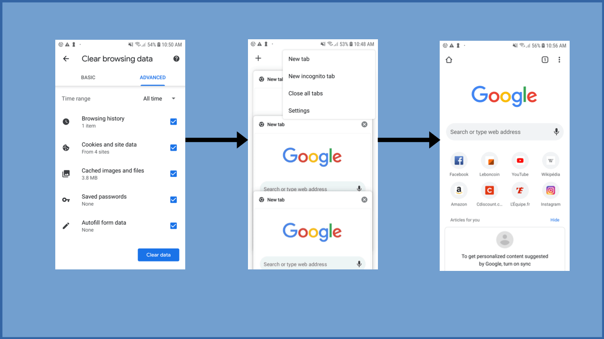
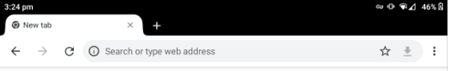
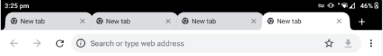
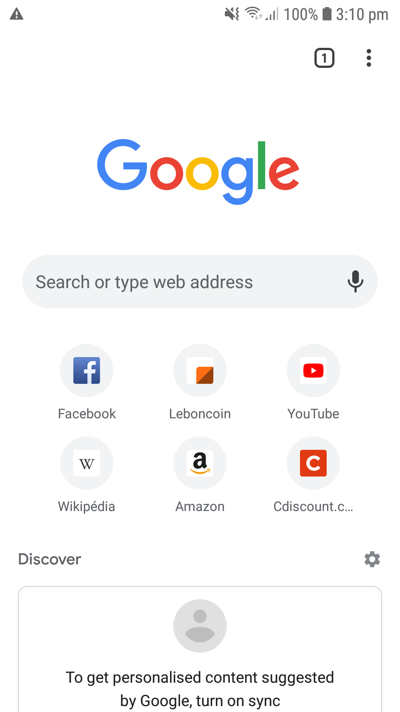

Context
Welcome to this new « GDSL focus » section. We will explain some methods of the Greenspector GDSL automation language. If you have not yet read the GDSL introductory article, do not hesitate before reading this one further.
Today we will focus on the browserReset method. It allows cleaning a browser to perform reliable performance and energy measurements.
To perform correct browser measurements, you need to be able to make sure to measure only your web page, without any parasite that could come from the browser, such as open tabs. Without this, the measurement of the consumption of a web page would be biased by tabs in the background carrying out processing and network exchanges. Moreover, it allows to precisely measure the consumption of the empty browser, once the cleaning has been carried out, and to compare it with the consumption of the site.
When it comes to automation, we cannot stand not knowing the initial conditions of our test. The unknown could disrupt its proper functioning or even lead to a test where nothing can be learned. Because, in the end, we do not know what will be measured.
On an automated test bench, it’s hard to know the state of the browser at the start of your test: you don’t know if a previous test left tabs open, changed the browser language, or anything else. We could take a look in the smartphones room but it becomes complicated if it is on the other side of the world. Not to mention the current health situation (this article was written during the crisis of Covid-19). You could also use the tools to monitor the phone remotely. So yes, but this is only valid if you are present when you run your test. For continuous integration campaigns that can run for hours or even overnight, you aren’t going to be able to monitor them constantly.
So what should be done? Clean the browser efficiently before each test.
Quick approach
In our case, we are going to use the Chrome browser. This method also works the same with another browser. We will also assume that this browser is updated regularly on phones.
A quick method, which will work in many cases to clean up a browser, is to close open tabs and clean the cache at the start of each of our tests. This way, the next time the browser opens during measurements it will be on an empty tab.

This method will work on the majority of smartphones but will be difficult on tablets because of the management of tabs. On tablets, tabs are generally displayed on a bar at the top (or bottom) of the browser, like on a computer. The peculiarity of this tab bar is that it is invisible to classic automation tools, which makes it very difficult to click on the cross to close the tab. In addition, the size of a tab will depend on the number of tabs open, making click by coordinates even more hazardous.


To top it off, the button to close all tabs at once only appears with a long press on the close cross of the first tab, making it unusable for us.
The last difficulty that this method can encounter is its maintenance, in fact by updating the application, the management of the tabs can change, as can the architecture of the application, requiring to modify regularly the automation scripts.
Complete solution
The solution used at Greenspector to clean the browser before our measurements and ensure the relevance of our results is as follows:
- Clean up application data. This is usually done using the adb shell pm clear PACKAGE_NAME command but can also be done in the phone’s settings menu.
- Skip browser first launches popups with automation.
Once this is done, there is one last point that can pose a problem. Some manufacturers or mobile operators display a personalized browser home page. To be able to compare measurements between several smartphones, you must get rid of this home page. We have chosen to disable the home page in the browser settings.

There is one last point regarding this home page. Indeed, it was loaded the first time the browser was launched and is therefore open, which is not practical for taking measurements. Our solution was to navigate to Chrome’s « new tab » page at the following URL:
- « chrome://newtab »
Once all these operations are done, your browser is ready to take measurements without the risk of having existing conditions to disturb it.
It is even ideal to do the cleaning also at the end of your test, that way you leave the phone ready for the next person.
UPDATE: For our measurement needs, we are interested in performance data, energy, and mobile data. This method meets performance and power requirements well but is not suitable for data on the Chrome browser. Indeed, by resetting the browser, Chrome automatically resynchronizes the data of the Google account, and at least the first two minutes of use there are exchanges of data related to the Google account. Signing out of the Google Account on Chrome or the phone doesn’t seem to solve the problem entirely. Therefore at Greenspector we no longer use this method to clean up a browser. No measurements have been taken on browsers other than Chrome to say that this method is not valid on them.
Here you know everything about the browserReset method. See you soon for a new GDSL focus where I will introduce you to another feature of the Greenspector automation language.